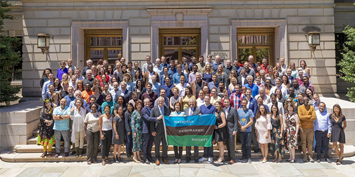
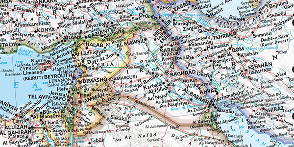

본문콘텐츠영역
OUR MISSION
Since 1888, the National Geographic Society has driven impact by identifying and investing in an international community of Explorers: leading scientists, educators, storytellers, conservationists, technologists, and many other changemakers who help us define some of the critical challenges of our time, drive new knowledge, advance new solutions, and inspire positive transformative change.
Since awarding our first grant in 1890, we have provided more than 14,000 grants for work across all seven continents. This includes the most comprehensive scientific expedition to Mount Everest, working to better understand human-carnivore conflict in Gorongosa, telling stories that help explain the world and all that’s in it, and groundbreaking work that has transformed our understanding of the great apes and what it means to be human.
We also engage audiences around the globe through signature experiences, stories, and content, including the National Geographic Museum at our headquarters in Washington, D.C.
OUR DIVERSITY STATEMENT
In May 2020, we launched our first diversity, equity, and inclusion statement which will serve as the north star for our efforts throughout our internal and external culture, systems, and practices.
YOUR STORY MATTERS
You Bring the Yellow Border to Life
We are not all the same. It is our differences that make the National Geographic Society, and our world, a better place. We embrace each person’s identity, experiences, and abilities, and we commit to cultivating an environment where everyone benefits from opportunity, mutual respect and a sense of belonging. We all have a story to tell. When we share and celebrate our stories, the yellow border comes to life.
RESOURCES AND OUR ACTIONS
-
- Virtually Visit the "Women: A Century of Change" Exhibition
- Celebrate the 100th anniversary of women's suffrage by exploring images from National Geographic's historic archives that depict women from around the world.
-

- See Our Commitments to Diversity, Equity, and Inclusion
- We’re committed to fostering a more diverse, equitable, & inclusive future. Learn about what the Society is doing to make that happen.
-
- Explore Diversity, Equity, and Inclusion Resources
- Explore this education resource collection, which provides learners background knowledge on issues related to cultural identity and diversity, increasing diversity in the geographic and scientific professions, and more.
-

- National Geographic Map Policy
- National Geographic’s Map Policy guides how we display the world in maps.